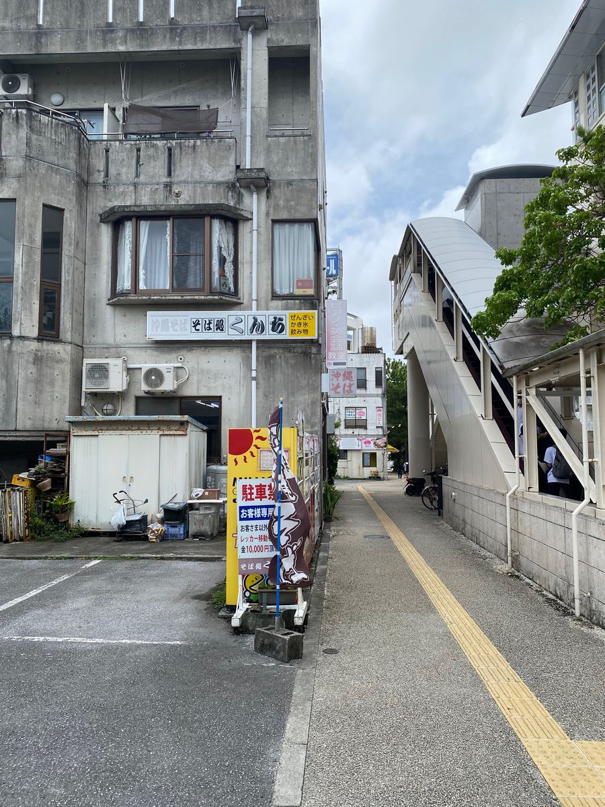
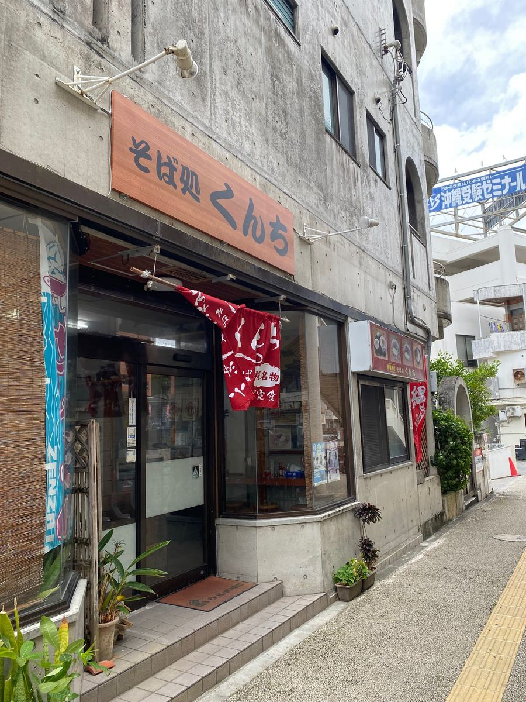
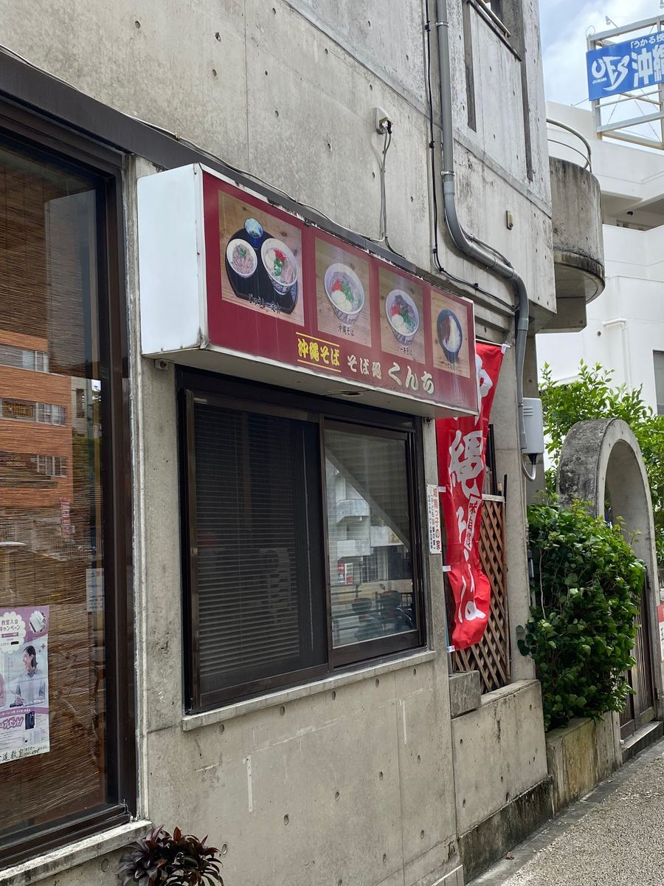
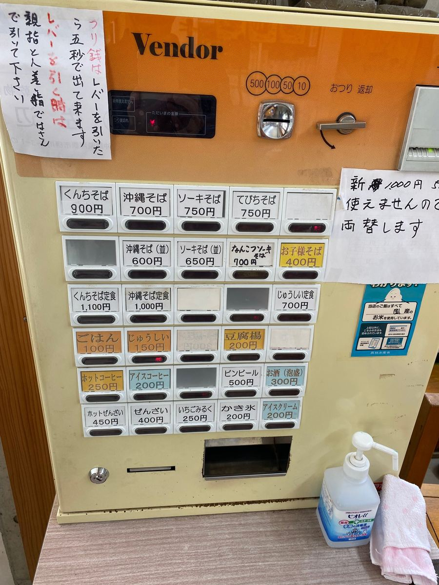
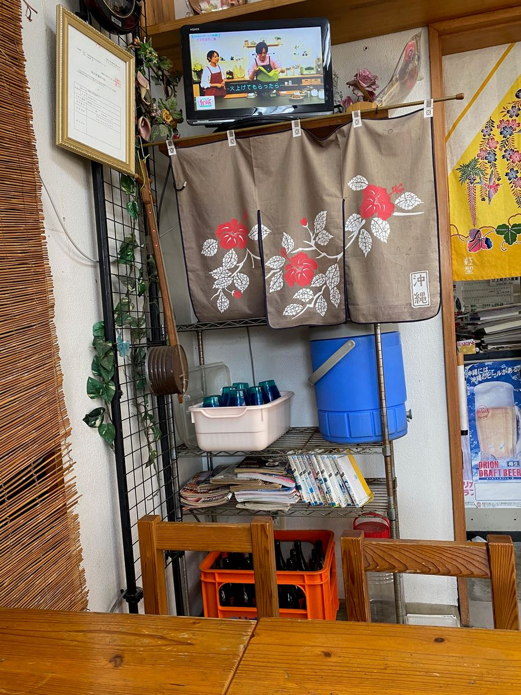
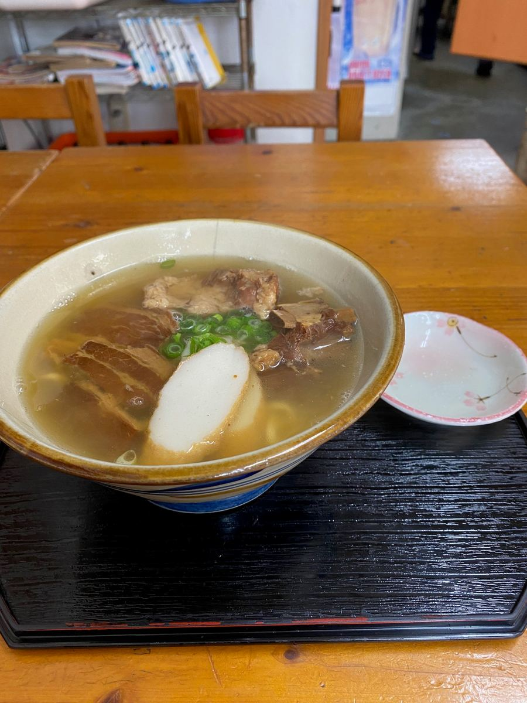
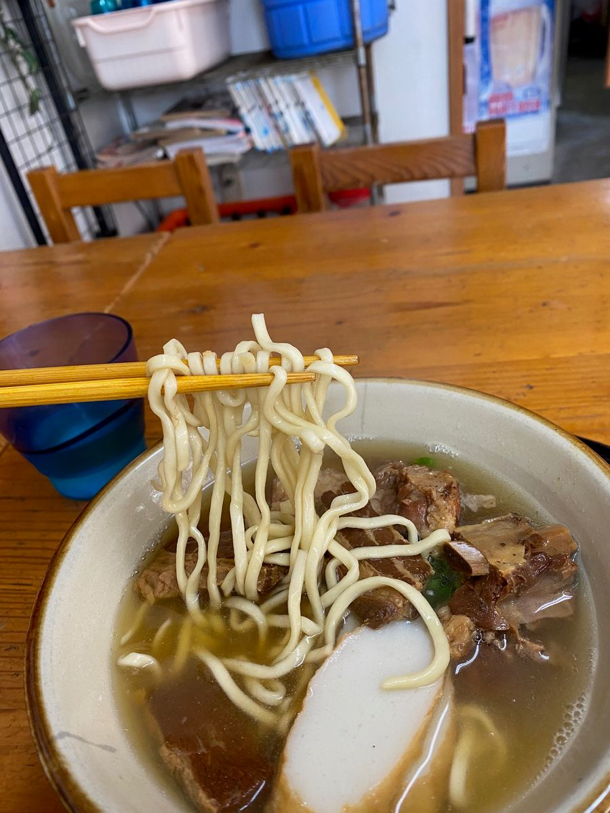
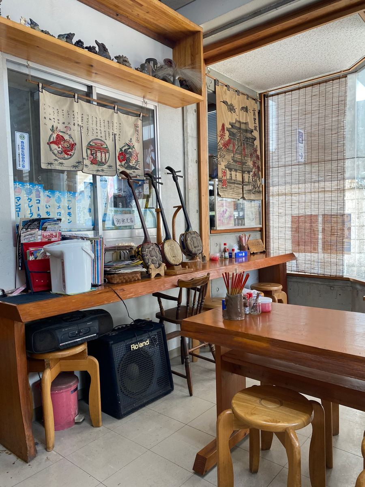
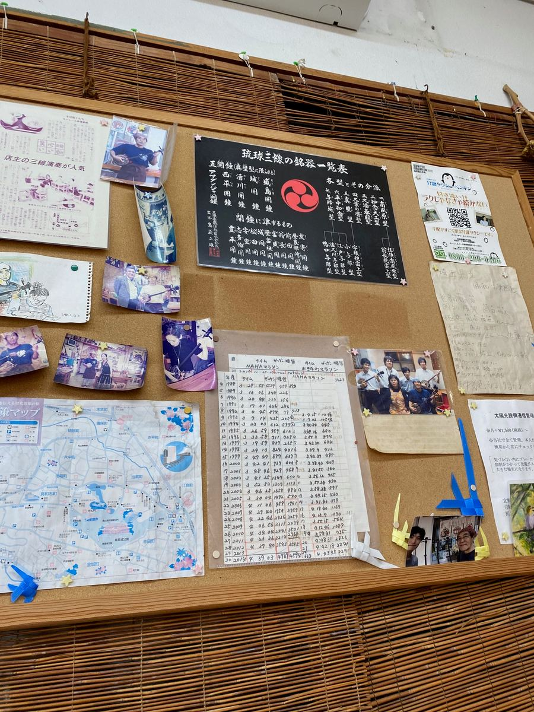

오키나와 소바 순례 여행, 이번에는 나하시 슈리에 있는 “소바도코로 쿤치”에 다녀왔어요🍜 2025.7에 먹었습니다😄

모노레일 슈리역 근처, 길가 건물에 있는 가게예요.


입구 위에는 “소바도코로 쿤치” 간판, 그 옆에는 소바 사진이 들어간 간판도 걸려 있어서, 여기가 오키나와 소바 가게라는 걸 금방 알 수 있어요😊

주문은 입구의 식권 발매기에서. 간판 메뉴인 쿤치 소바는 900엔, 정식은 1,100엔. 그 밖에도 오키나와 소바, 소키 소바, 테비치 소바, 연골 돼지갈비 소바(난코츠 소키 소바), 주시 정식 등이 늘어서 있어요.

가게 안은 TV와 노렌(가게 천 간판)이 걸려 있는, 옛날 그대로의 식당 같은 분위기. 이날 손님은 동네 학생분과 저뿐이었어요.

이번에 주문한 것은 가게 이름을 내건 “쿤치 소바”. 뼈 있는 돼지갈비(혼소키)와 삼겹살 조림(산마이니쿠)이 올라간 한 그릇입니다✨
우선 국물부터. 돼지뼈 베이스의 맛이네요😋

면은 가는 스트레이트 면으로, 삶은 정도는 부드러운 편.
고명인 뼈 있는 돼지갈비(혼소키)와 삼겹살 조림(산마이니쿠)은 둘 다 간이 센 편으로, 씹는 맛이 확실한 타입. 힘줄 같은 질긴 식감도 확실히 느껴졌어요^^;

그리고 이 가게에서 가장 놀란 건 여기서부터. 가게 안 한켠에 산신이 몇 대나 놓여 있네 하고 생각하고 있었더니, 갑자기 주인분이 산신 연주와 노래를 선보여 주셨어요😅 아사토야 윤타를 비롯해 몇 곡을 들려주셨답니다😅
그때의 모습이 이것🎶 식당 안에서 뜻밖의 라이브 연주예요.

벽에는 “류큐 산신 명기 일람표”와 “주인의 산신 연주가 인기”라는 신문 기사 스크랩, 산신을 든 사진이 잔뜩 붙어 있어서, 이게 가게의 명물이군요. 슈리역에서 가까우니 관광으로 오신 분께는 반가운 서비스일지도 몰라요😄
평가(9점/15점): 돼지뼈 베이스 국물에 부드러운 가는 스트레이트 면. 뼈 있는 돼지갈비(혼소키)와 삼겹살 조림(산마이니쿠)은 간이 세고 씹는 맛이 있는, 힘줄 같은 질긴 식감이 있는 타입이었어요. 맛 자체는 보통이려나 하는 인상이지만, 주인의 산신 연주와 노래라는 여기서만 맛볼 수 있는 체험을 할 수 있는 가게였어요😊
면: ★★★☆☆（3）
수프: ★★★☆☆（3）
토핑: ★★★☆☆（3）